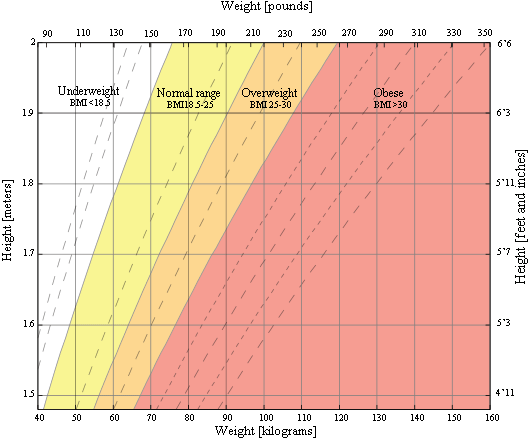

= BMI মানে Body Mass Index
= বিএমআই হ'ল ব্যক্তির উচ্চতা এবং ওজনের উপর ভিত্তি করে কোনও ব্যক্তির হতাশতা বা শারীরিক
পরিমাপের
একটি পরিমাপ
এবং
টিস্যু ভরকে পরিমাণমুক্ত করার উদ্দেশ্যে। এটি কোনও ব্যক্তির উচ্চতার জন্য স্বাস্থ্যকর শরীরের
ওজন
আছে কিনা তার
সাধারণ সূচক হিসাবে ব্যাপকভাবে ব্যবহৃত হয়। বিশেষত, BMI এর গণনা থেকে প্রাপ্ত মানটি কোনও
ব্যক্তির
কম ওজন,
স্বাভাবিক ওজন, অতিরিক্ত ওজন বা স্থূলতার সাথে মূল্য নির্ধারণের ক্ষেত্রে কতটা হয় তার উপর
ভিত্তি
করতে
শ্রেণিবদ্ধকরণে ব্যবহৃত হয়।
বিএমআইয়ের এই ব্যাপ্তিগুলি অঞ্চল এবং বয়স হিসাবে
ফ্যাক্টর উপর ভিত্তি
করে
পরিবর্তিত
হয় এবং কখনও কখনও তীব্রভাবে ওজন বা খুব মারাত্মক স্থূলত্বের মতো উপশ্রেণীতে বিভক্ত হয়।
অতিরিক্ত
ওজন বা কম
ওজনের
হওয়ার কারণে স্বাস্থ্যের উপর উল্লেখযোগ্য প্রভাব থাকতে পারে, সুতরাং বিএমআই যখন স্বাস্থ্যকর
শরীরের
ওজনের একটি
অপূর্ণ পরিমাপ, তখন কোনও অতিরিক্ত পরীক্ষা বা পদক্ষেপ নেওয়া প্রয়োজন কিনা তা একটি দরকারী
সূচক।
ক্যালকুলেটর
দ্বারা
ব্যবহৃত BMI ভিত্তিক বিভিন্ন বিভাগ দেখতে নীচের টেবিলটি দেখুন।

BMR কি?
Read More..
= BMR মানে Body Metabolic Rate
ভিত্তিগত
বিপাকের হার (বিএমআর) হ'ল পরিপাকতন্ত্র নিষ্ক্রিয় থাকে যখন একটি নাতিশীতোষ্ণ পরিবেশে বিশ্রাম
নেওয়ার সময় প্রয়োজনীয় শক্তির পরিমাণ। নিষ্ক্রিয় গাড়ি পার্ক করার সময় কতটা গ্যাস খায় তা
নির্ধারণের সমতুল্য। এ জাতীয় অবস্থায় শক্তি কেবলমাত্র গুরুত্বপূর্ণ অঙ্গ রক্ষণাবেক্ষণের জন্য
ব্যবহৃত হবে, যার মধ্যে অন্তর, ফুসফুস, কিডনি, স্নায়ুতন্ত্র, অন্ত্র, লিভার, ফুসফুস,
পেশী এবং ত্বক অন্তর্ভুক্ত। বেশিরভাগ মানুষের জন্য, প্রতিদিন জ্বলিত মোট শক্তি (ক্যালোরি) ~ 70%
এর
ওপরের দিকে রক্ষণাবেক্ষণের কারণে হয়। শারীরিক ক্রিয়াকলাপ expenditure 20% ব্যয় করে এবং 10%
ডলার
খাদ্য হজমের জন্য ব্যবহৃত হয়, এটি থার্মোজেনেসিস নামেও পরিচিত। জেগে থাকাকালীন বিএমআর খুব
সীমাবদ্ধ
পরিস্থিতিতে পরিমাপ করা হয়। একটি সঠিক বিএমআর পরিমাপের জন্য একজন ব্যক্তির সহানুভূতিশীল
স্নায়ুতন্ত্র নিষ্ক্রিয় হওয়া প্রয়োজন, যার অর্থ ব্যক্তিকে অবশ্যই বিশ্রাম নিতে হবে be বেসল
বিপাক সাধারণত কোনও ব্যক্তির মোট ক্যালোরির প্রয়োজনের বৃহত্তম উপাদান। প্রতিদিনের ক্যালোরির
প্রয়োজনীয়তা হ'ল বিএমআর মান ক্রিয়াকলাপের স্তরের উপর নির্ভর করে 1.2 এবং 1.9 এর মধ্যে একটি
গুণকের সাথে গুণিত হয়। বেশিরভাগ পরিস্থিতিতে,
বিএমআর স্ট্যাটিস্টিকাল ডেটা থেকে সংক্ষিপ্ত
সমীকরণগুলির সাথে অনুমান করা হয়। হ্যারিস-বেনেডিক্ট সমীকরণটি প্রবর্তন করা প্রথম দিকের
সমীকরণগুলির
মধ্যে একটি। এটি আরও নির্ভুল হওয়ার জন্য ১৯৮৪ সালে সংশোধিত হয়েছিল এবং ১৯৯০ সাল পর্যন্ত এটি
ব্যবহার করা হয়েছিল, যখন মিফলিন-সেন্ট জিয়র সমীকরণ চালু হয়েছিল। মিফ্লিন-সেন্ট জ্যোর
সমীকরণটি
সংশোধিত হ্যারিস-বেনেডিক্ট সমীকরণের চেয়ে আরও সঠিক বলে প্রমাণিত হয়েছে। ক্যাচ-ম্যাকআর্ডল
সূত্রটি
সামান্য পৃথক যে এটি দৈনিক শক্তি ব্যয় (আরডিইই) বিশ্রামের জন্য গণনা করে, যা শারীরিক শরীরের
ভরগুলিকে বিবেচনায় নেয়, যা মিফলিন-সেন্ট জওর বা হ্যারিস-বেনিডিক্ট সমীকরণ নয়। এই সমীকরণগুলির
মধ্যে, মিফ্লিন-সেন্ট জওর সমীকরণটি BMR গণনা করার ক্ষেত্রে সবচেয়ে সঠিক সমীকরণ হিসাবে
ব্যতিক্রম
হিসাবে বিবেচিত হয় যে ক্যাচ-ম্যাকআর্ডল সূত্রটি এমন ব্যক্তিদের পক্ষে আরও নির্ভুল হতে পারে
যারা
ঝোঁকযুক্ত এবং তাদের শরীরের ফ্যাট শতাংশের পরিমাণ জানেন know সেটিংস প্রসারিত করে আপনি গণনায়
ব্যবহৃত সমীকরণটি চয়ন করতে পারেন। ক্যালকুলেটর দ্বারা ব্যবহৃত তিনটি সমীকরণ নীচে তালিকাভুক্ত
করা
হয়েছে
Risks of Overweight?
Read This..
Risks associated with being overweight
Being underweight has its own associated risks, listed below:
- High blood pressure
- Higher levels of LDL cholesterol, which is widely considered "bad
cholesterol," lower levels
of HDL cholesterol, considered to be good cholesterol in moderation, and high levels of
triglycerides
- Type II diabetes
- Coronary heart disease
- Stroke
- Gallbladder disease
- Osteoarthritis, a type of joint disease caused by breakdown of joint
cartilage
- Sleep apnea and breathing problems
- Certain cancers (endometrial, breast, colon, kidney, gallbladder,
liver)
- Low quality of life
- Mental illnesses such as clinical depression, anxiety, and others
- Body pains and difficulty with certain physical functions
- Generally, an increased risk of mortality compared to those with a
healthy BMI
In some cases, being underweight can be a sign of some underlying condition or disease such
as
anorexia nervosa, which has its own risks. Consult your doctor if you think you or someone
you
know is underweight, particularly if the reason for being underweight does not seem obvious.
Risks of underweight?
Read This..
Being underweight has its own associated risks, listed below:
- Malnutrition, vitamin deficiencies, anemia (lowered ability to carry blood vessels)
- Osteoporosis, a disease that causes bone weakness, increasing the risk of breaking a
bone
- A decrease in immune function
- Growth and development issues, particularly in children and teenagers
- Possible reproductive issues for women due to hormonal imbalances that can disrupt the
menstrual cycle. Underweight women also have a higher chance of miscarriage in the first
trimester
- Potential complications as a result of surgery
- Generally, an increased risk of mortality compared to those with a healthy BMI
In some cases, being underweight can be a sign of some underlying condition or disease such
as
anorexia nervosa, which has its own risks. Consult your doctor if you think you or someone
you
know is underweight, particularly if the reason for being underweight does not seem obvious.
Limitations of BMI?
Read This..
Although BMI is a widely used and useful indicator of healthy body weight, it does have its
limitations. BMI is only an estimate that cannot take body composition into account. Due to
a
wide variety of body types as well as distribution of muscle, bone mass, and fat, BMI should
be
considered along with other measurements rather than being used as the sole method for
determining a person's healthy body weight.
In adults :
BMI cannot be fully accurate because it is a measure of excess body weight, rather than
excess
body fat. BMI is further influenced by factors such as age, sex, ethnicity, muscle mass, and
body fat, and activity level, among others. For example, an older person who is considered a
healthy weight, but is completely inactive in their daily life may have significant amounts
of
excess body fat even though they are not heavy. This would be considered unhealthy, while a
younger person with higher muscle composition of the same BMI would be considered healthy.
In
athletes, particularly bodybuilders who would be considered overweight due to muscle being
heavier than fat, it is entirely possible that they are actually at a healthy weight for
their
body composition. Generally, according to the CDC:
- Older adults tend to have more body fat than younger adults with the same BMI.
- Women tend to have more body fat than men for an equivalent BMI.
- Muscular individuals and highly trained athletes may have higher BMIs due to large
muscle
mass.
In children and adolescents
The same factors that limit the efficacy of BMI for adults can also apply to children and
adolescents. Additionally, height and level of maturation can influence BMI and body fat
among children. BMI is a better indicator of excess body fat for obese children than it is
for
overweight children, whose BMI could be a result of increased levels of either fat or
fat-free
mass (all body components except for fat, which includes water, organs, muscle, etc.). In
thin
children, the difference in BMI can also be due to fat-free mass. source: calculator.net BMI article
BMI Table
Show This..
BMI State Table
| BMI |
Stage |
| < 18.5 |
শরীরের ওজন কম (Underweight) |
| 18.5 to 24.9 |
সুসাস্থ্যের আদর্শ মান (Normal) |
| 25 to 29.9 |
শরীরের ওজন বেশি (Overweight) |
| 30 to 34.9 |
"স্থুল (পর্যায়-১): মেদ বেশি | অতিরিক্ত ওজন (Obese I) |
| 35 to 39.9 |
বেশি স্থুল (পর্যায়-২) । অতিরিক্ত মেদ (Obese II) |
| > 40 |
অতিরিক্ত স্থুল (শেষ পর্যায়)। মৃত্যুঝুঁকির আশংকা! (Obese III Extreme) |